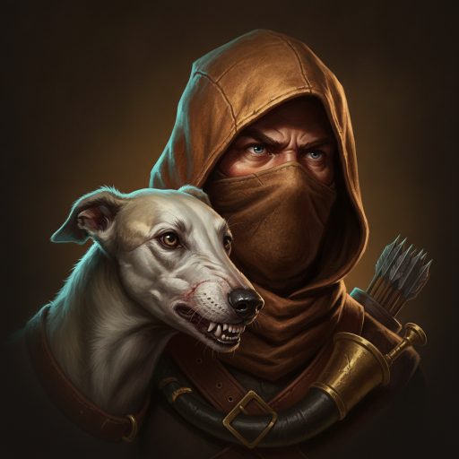

The kit
- P
Blooded Trail
Attacks and abilities Scent enemies for 8s. Scented enemies trail wisps through fog, take 20% more damage from Tatters, and grant you movement speed when hit. Standing in a river removes Scent.
- Q
Barbed Bolt
A heavy bolt that Scents and marks the target. Tatters' next 3 attacks against it deal bonus damage.
- W
LOOSE! / HEEL!
Send Tatters at a target, at double range against Scented enemies, or recall her to your side. She takes 30% less damage while returning.
- E
Roll Away
Tumble a short distance. Your next basic attack within 3s fires twice, and if Tatters is on that target the second shot trips it.
- R
The Last Hunt
Sound the horn for 8s. Every Scented enemy is revealed, Tatters gains attack speed and slow immunity, and you deal bonus damage to whatever Tatters is attacking. A Scented kill refreshes the duration.